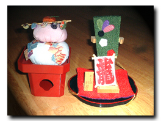

| ..*..*.. 2004年1月1日(木) 雨 ..*..*..  新年おめでとうございます。今年もどうぞよろしくお願いいたします。 カリフォルニアに来て、引っ越しもない落ち着いたお正月は、これで3回目。左の写真は、うちの唯一のお正月の飾りです。 こっちでは、31日に、NHKの紅白歌合戦をコマーシャルを入れて合計5時間かけてやります。お昼すぎからやっているので、おせち料理をつくりながら見ています。日本語放送のことはあまり宣伝しないので知らなかったのですが、3年前に知ってから、毎年、見ながら作っています。
作ったのは、去年とだいたい同じで、栗きんとん、紅白なます、小カブの菊花かぶ、牛肉ごぼう巻き、昆布巻き、かずのこ。煮物(黒)-ごぼう、昆布、椎茸。煮物(白)-れんこん、にんじん、ゆでたけのこ、里芋。たたきごぼう、エビの姿焼き、イカ焼き。あと、お雑煮です。これだけでも、丸一日はかかってしまいます。 器もお重箱じゃなくて、ふだん使うお皿です。
今年は、上記の去年のにプラスして、伊達巻き、黒豆、みかん寒天も作りました。伊達巻きは、はんぺんをすりつぶして、卵を混ぜて両面を焼いたあと、す巻きで巻きます。今年初めて作ったんだけど、なかなかかな？ ちなみに栗きんとんは、栗の甘煮の缶詰じゃなくて、生栗から作ろうとして失敗しました。生の栗の皮をむいてゆでているうちに、どんどんくずれて、栗の形がほとんどなくなりました(涙) さて、今年の抱負を簡単に書いてみたいと思います。全体的には、去年も目標にした「何があっても動じない」ですね。ちょっと予定と違うことが起こると慌ててしまうので、そういうとこがなくなればいいと思ってます。 スポーツは、去年やっていたエアロビは止めました。時間が夕方の7時からのしかないので、もう少し自分でコントロールできる時間がいいなぁ、と思って。今は、ジョギングを増やして週3回、15分-20分くらい走っています。これに、週1、2回アパートのジムに行けたらいいと思っています。 今年後半くらいから手作り石けんを作りはじめたのですが、これがなかなか面白いので、レシピも増やして規則的に作っていきたいと思っています。 あとは、パンとかお菓子などを含めたお料理をもっと洗練されたできあがりにしたい、見た目や味の付け方などがもっとうまくなるといいな、と思っています。難しいけど。 仕事は、自分の専門にあたる専門書を3冊くらい読めればと思っています。 引き続き、F1の知識を増やす、ハーブをうまく育てる、これって、永遠の目標になりそうです。 それから、仕事でも生活でも、もう少し、いろんなことやったり見たりする時間を増やしたいと思っていて、これは日常のやるべき作業をもっと手際良くやればできるはずなので、わりと細かく、どういう風にするかを自分のノートに書きました。「やったり見たりする時間」というのは、具体的には、調べものを思う存分したり、DVD(映画)を見るとか、本を読むなどです。 去年の目標にしたスポーツ、画像処理を使いこなす、F1もっと知るというのは、(目標が低いのか、楽天的な性格のおかげか)うまくいった(と思っている)ので、今年も上記のこと、がんばってみたいと思います。 |